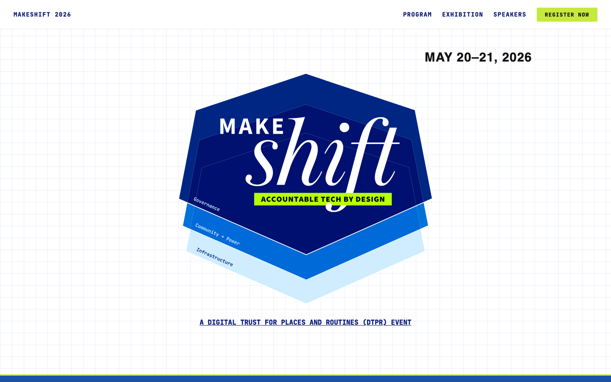
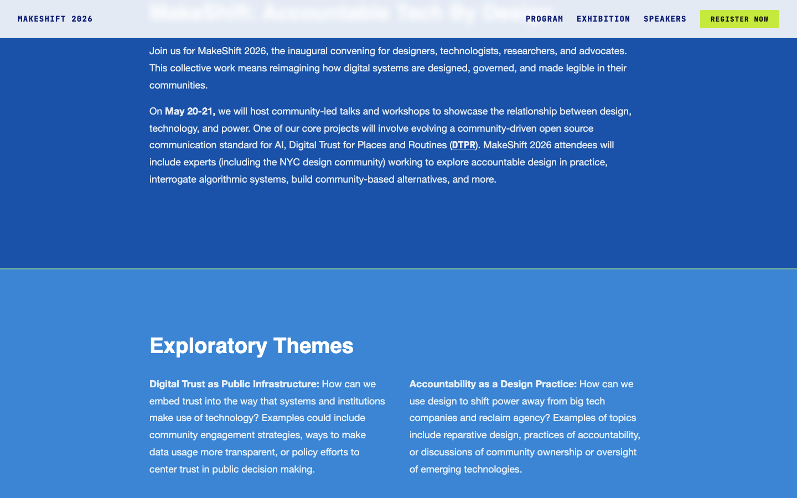
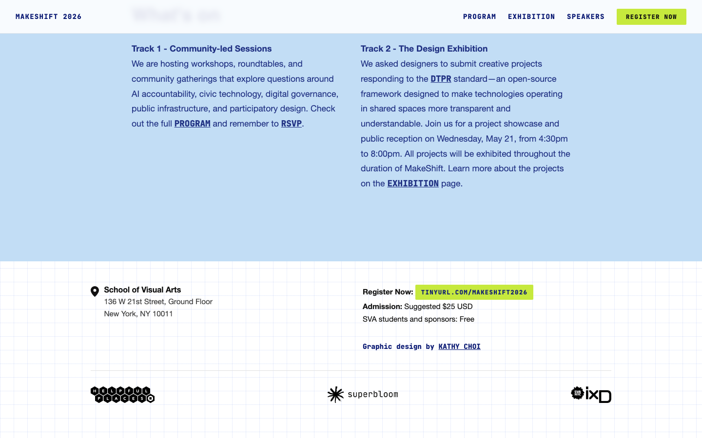
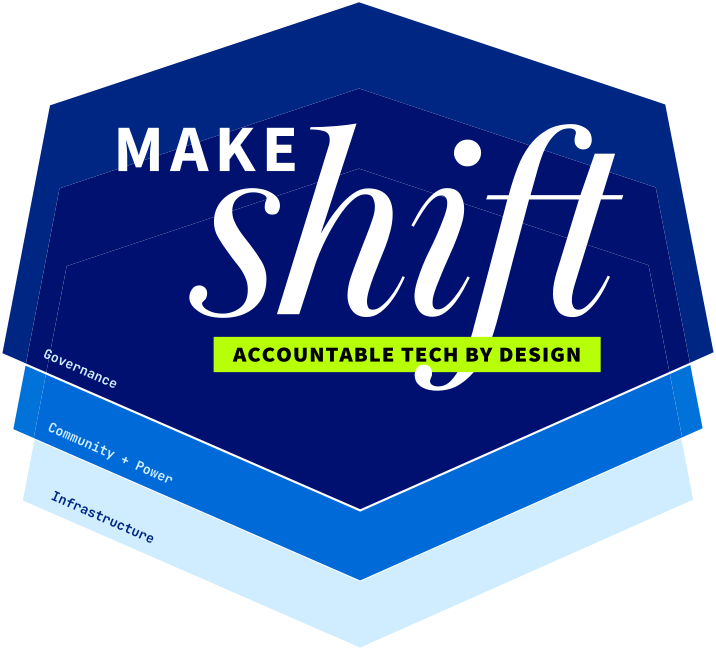

The contemporary visual baseline
The 2026 MakeShift event site (Accountable Tech by Design). The cleanest, most disciplined visual surface in the entire DTPR ecosystem — and, per the brand foundation memo v2, one of the two designated reference points for Phase 3 visual development alongside vision.dtpr.io. Single CSS file, no framework, no build pipeline.
Hero / badge

Exploratory Themes — color-token sections

#1952a8 (Government & Industry), royal-blue #3b85d4 (Critical & Civic Tech), pale-blue #c2ddf5 (Community & Conversation). Each section has a lime accent stripe above it. This is the explicit-token system that dtpr.io and vision.dtpr.io lack.
Schedule — the table block

Footer — partner lockup

Source-code analysis
The makeshift stylesheet is a single 10,776-byte file at https://makeshift2026.dtpr.io/style.css. The :root block defines an explicit color-token system that should be the model for the brand book:
From makeshift2026.dtpr.io/style.css :root block:
:root {
--navy: #0d1c75; /* darker alt of brand navy */
--gov-blue: #1952a8;
--royal-blue: #3b85d4;
--pale-blue: #c2ddf5;
--lime: #c6e93d;
--ink: #111111;
--grid: rgba(65, 105, 225, 0.11);
}
body {
font-family: 'Source Sans', 'Helvetica Neue', Arial, sans-serif;
font-weight: 400;
background-color: #ffffff;
background-image:
linear-gradient(var(--grid) 1px, transparent 1px),
linear-gradient(90deg, var(--grid) 1px, transparent 1px);
background-size: 28px 28px;
color: var(--ink);
min-height: 100vh;
}
@font-face {
font-family: 'JetBrains Mono';
src: url('Fonts/JetBrainsMono-ExtraBold.ttf') format('truetype');
font-weight: 800;
}
@font-face {
font-family: 'Source Sans';
src: url('Fonts/SourceSansVariable-Roman.otf') format('opentype');
font-weight: 100 900;
}
The layered hexagonal mark

#0072d9 connectors, lime #b7ff08 accents, pale-blue #cfedff fills, and the "MAKE shift" wordmark set in a sans + script combination in the center. The script italic is a bespoke drawn form, not a licensed font. This is the event-specific mark — not a replacement for the canonical DTPR hex.
Audit findings specific to Makeshift
The cleanest discipline in the system
Single CSS file. Explicit token system. Self-hosted fonts. Source Sans for body, JetBrains Mono for UI. Sticky nav with backdrop blur. Color-coded session labels. The most disciplined visual surface in the ecosystem.
makeshift2026.dtpr.io/style.css
The only site that uses an explicit color-token system
Seven CSS custom properties (--navy, --gov-blue, --royal-blue, --pale-blue, --lime, --ink, --grid) plus explicit font-family declarations. The brand book should adopt this pattern.
makeshift2026.dtpr.io/style.css :root
JetBrains Mono as UI labels is a strong discipline
All navigation, links, buttons, and labels are JetBrains Mono ExtraBold uppercase with wide letter-spacing. This makes the UI layer visually distinct from the Source Sans body and gives the system a recognisable "technical document" feel.
makeshift2026.dtpr.io/style.css
Sticky nav with backdrop blur
Nav has backdrop-filter: blur(6px) and a 92% white background. Reads as a modern web product convention. Currently neither dtpr.io nor vision.dtpr.io use this pattern.
makeshift2026.dtpr.io/style.css nav
Lime is a 2026-era accent
No comparable accent existed on vision.dtpr.io or dtpr.io. The lime functions as a CTA color (REGISTER NOW) and as a section-divider accent stripe. It should not appear on body surfaces.
makeshift2026.dtpr.io/theme blocks
The "MAKE shift" script is a one-off, not a type direction
The script italic on the badge is a bespoke drawn form, not a licensed font. It does not appear elsewhere and is not a typographic direction for the brand.
makeshift_hexagon.svg
The layered hex mark is event-specific
Not a replacement for the canonical DTPR hex. The brand book should make this explicit to prevent the mark from being mis-applied to a non-event surface.
makeshift_hexagon.svg
Contemporary baseline designation
MEMO Brand foundation memo v2, §5: The visual system has two complementary reference points. vision.dtpr.io = the classic/baseline digital expression. MakeShift 2026 = the contemporary expression, with internal traction with the DTPR team. Phase 3 should treat both together as the visual canon — MakeShift advancing, not replacing, the vision.dtpr.io baseline.
The layered hexagon as semantic device
The MakeShift mark extends the three-layer hierarchy from a UI pattern into a brand-level visual device. The three stacked hexagonal planes map directly onto the DTPR Scene/Surface/Signal model:
PROPOSED The isometric-stack treatment is a strong candidate for encoding the Scene/Surface/Signal hierarchy at the brand level, not just the UI level. The brand book should evaluate whether to adopt this device on dtpr.io surfaces.
Candidate type system PROPOSED
The MakeShift files use a consistent three-role type system across all formats (self-hosted fonts, banner signage, program booklet, social media). This is the strongest candidate for the DTPR type stack going forward.
| Role | Typeface | Weight / Style | Where used in Makeshift |
|---|---|---|---|
| Display / editorial headline | Baskerville Display PT | Italic | Large editorial wordmark ("shift"); high contrast with sans |
| UI / body / labels | Source Sans Variable | Regular → Black (variable axis, 100–900) | All running copy, UI labels, navigation, body text, weight-900 date display |
| Technical / code labels | JetBrains Mono | ExtraBold (800) | Nav links, schedule day labels, badge call-outs, uppercase mono labels throughout |
OPEN This three-role system needs explicit adoption as the canonical DTPR type stack. Currently observable in MakeShift and sourced from the brand foundation memo, but not yet formally decided. See page 08.
Candidate color palette PROPOSED
The MakeShift :root block defines the most explicit token system in the DTPR ecosystem. These are the candidates for the Phase 3 color token set:
| Role | Token | Observed value | Notes |
|---|---|---|---|
| Primary / brand | --navy | #0d1c75 | Slightly darker than dtpr.io navy (#002684). Both are brand navy — the brand book should lock one. |
| Secondary / layer 2 | --gov-blue | #1952a8 | Theme section: Governance |
| Secondary / layer 3 | --royal-blue | #3b85d4 | Theme section: Community + Power |
| Tertiary / layer 4 | --pale-blue | #c2ddf5 | Theme section: Infrastructure. Also grid lines. |
| Accent / signal | --lime | #c6e93d | CTA accent, section divider stripe. ISO 3864 candidate resolution — see page 07. |
| Text / ink | --ink | #111111 | Near-black body text. Consistent with dtpr.io. |
| Grid / field texture | --grid | rgba(65,105,225,0.11) | Graph-paper background rule. Signature "maker" aesthetic. |